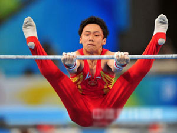

<!DOCTYPE html>
<html lang="en">

<head>
  <meta charset="UTF-8">
  <meta name="viewport" content="width=device-width, initial-scale=1.0">
  <meta http-equiv="X-UA-Compatible" content="ie=edge">
  <title>Document</title>
  <style>
    /* 多组过滤
    div {
      width: 100px;
      height: 100px;
      background-color: pink;
      transition: width 2s, height 2s 2s, background-color 3s 1s, border-radius 2s 2s;
    }

    div:hover {
      width: 400px;
      height: 400px;
      background-color: yellow;
      border-radius: 50%;
    } */

    /* 平移translate是transform的属性值
    div {
      position: absolute;
      width: 100px;
      height: 100px;
      background-color: pink;
      transition: all 2s;
      left: 50%;
      top: 50%;
      transform: translate(-50%, -50%);
      用平移来实现居中的效果
    }

    div:hover {
       transform: translate(100px, 100px); 
      
      实现平移的效果
    } */

    /* scale缩放是transform的属性，比例缩放
    div {
      width: 100px;
      height: 100px;
      background-color: pink;
      margin: 300px auto;
      transition: all 2s;
    }

    div:hover {
      transform: scale(0.5, 0.5)
    } */

    /* rotate是transform的旋转属性，
    div {
      position: absolute;
      left: 50%;
      transform: translate(-50%);
      top: 200px;
    }

    img:hover {
      transform: rotate(360deg);
    }

    img {
      transition: all 2s;
      transform-origin: 100px 150px;
      transform-origin可以设置旋转的原点位置
    } */

    /* 旋转吧楚乔
    div {
      width: 300px;
      height: 200px;
      margin: 300px auto;
      position: relative;
    }

    img {
      width: 100%;
      height: 100%;
      position: absolute;
      transition: all 2s;
      transform-origin: left top;
    }

    div:hover img:nth-child(1) {
      transform: rotate(60deg)
    }

    div:hover img:nth-child(2) {
      transform: rotate(120deg)
    }

    div:hover img:nth-child(3) {
      transform: rotate(180deg)
    }

    div:hover img:nth-child(4) {
      transform: rotate(240deg)
    }

    div:hover img:nth-child(5) {
      transform: rotate(300deg)
    }

    div:hover img:nth-child(6) {
      transform: rotate(360deg)
    } */

    /* skew倾斜
    div {
      width: 100px;
      height: 100px;
      background-color: pink;
      transition: all 2s;
    }

    div:hover {
      transform: skew(-60deg);
    } */

    /* 旋转x 
    div {
      perspective: 1000px;
      视距：近大远小,必须写在父元素上
    }

    img {
      transition: all 2s;
    }

    img:hover {
      transform: rotateX(60deg);
    } */

    /* 旋转y
    div {
      width: 400px;
      height: 400px;
      perspective: 1000px;
    }

    img {
      width: 100%;
      height: 100%;
      transition: all 3s;
    }

    img:hover {
      transform: rotateY(360deg);
    } */

    /* 开门见楚乔  */
    div.box {
      width: 450px;
      height: 300px;
      background: url("images/1.jpg");
      margin: 200px auto;
      position: relative;
      perspective: 1000px;
    }

    .left {
      position: absolute;
      left: 0;
      top: 0;
      width: 50%;
      height: 300px;
      background-image: url(images/bg.png);
      transform-origin: left center;
      transition: all 2s;

    }

    .right {
      position: absolute;
      right: 0;
      top: 0;
      width: 50%;
      height: 300px;
      background-image: url(images/bg.png);
      transform-origin: right center;
      transition: all 2s;
    }

    i {
      width: 20px;
      height: 20px;
      border-radius: 50%;
      border: 2px solid #000;
    }

    .door-l {
      position: absolute;
      right: 0px;
      top: 50%;
      transform: translateY(-50%);
    }

    .door-r {
      position: absolute;
      left: 0px;
      top: 50%;
      transform: translateY(-50%);
    }

    div.box:hover .left {
      transform: rotateY(-120deg);
    }

    div.box:hover .right {
      transform: rotateY(120deg);
    }

    /* 动画初体验
    声明动画 */
    /* @keyframes moving {
      from {
        transform: translateX(0);
      }
      to {
        transform: translateX(500px);
      }
    }

    div {
      width: 100px;
      height: 100px;
      background-color: red;
      animation: moving 2s infinite alternate;
      //调用动画
    } */

    /* 猫来了
    img {
      width: 200px;
      height: 150px;
      animation: coming 10s;
    }

    @keyframes coming {
      0% {}
      45% {
        transform: translateX(1400px);
      }
      55% {
        transform: translateX(1400px) rotateY(180deg);
      }
      95% {
        transform: translateX(0) rotateY(180deg);
      }
      100% {
        transform: translateX(0);
      }
    } */

    /* 主轴对齐方式
    .box {
      height: 800px;
      width: 80%;
      margin: 100px auto;
      border: 1px solid #ccc;
      display: flex;
      先改变显示模式 min-width: 500px;
      max-width: 1000px;
      限制父盒子的最大值以及最小值 主轴对齐 justify-content: flex-end;
      从结束的地方开始排列 justify-content: center;
      居中对齐 justify-content: space-between;
      每个子盒子之间都有间隙 justify-content: space-around;
      每个盒子左右都有自适应的间距
      侧轴方向 ,只控制单行
      align-items: center;
      中心对齐
      align-items: flex-start;
      align-items: flex-end;
    }

    .red,
    .yellow,
    .blue {
      width: 250px;
      height: 250px;
    }

    .red {

      background-color: red;
    }

    .yellow {

      background-color: yellow;

    }

    .blue {

      background-color: blue;

    } */

    /* .box {
      height: 800px;
      width: 1000px;
      margin: 100px auto;
      border: 1px solid #ccc;
      display: flex;
      flex-wrap: wrap;

      // flex-wrap: wrap-reverse; 
      //翻转排序，从底部开始排序 

      align-content: center;
      align-content: flex-start;
      align-content: flex-end;
      align-content: space-between;
      align-content: space-around;
    }

    .red,
    .yellow,
    .blue,
    .pink,
    .hotpink,
    .deeppink {
      width: 250px;
      height: 250px;
      font-size: 30px;
    }

    .red {
      background-color: red;
    }

    .yellow {
      background-color: yellow;
    }

    .blue {
      background-color: blue;
    }

    .pink {
      background-color: pink;
    }

    .hotpink {
      background-color: hotpink;
    }

    .deeppink {
      background-color: deeppink;
      order: -1;
    } */
  </style>

</head>

<body>
  <!-- 多组过滤
  <div></div> -->

  <!-- rotate是transform的旋转属性
  <div>
    
  </div> -->

  <!-- 旋转吧楚乔
  <div>
    
    
    
    
    
    
  </div> -->

  <!-- <div>
    
  </div> -->

  <!-- 旋转y
  <div>
    
  </div> -->

  <!-- 开门见楚乔 -->
  <div class="box">
    <div class="left">
      <i class="door-l"></i>
    </div>
    <div class="right">
      <i class="door-r"></i>
    </div>
  </div>

  <!-- 猫来了
  <div>
    
  </div> -->

  <!-- 主轴对齐方式
  <div class="box">
    <div class="red">1</div>
    <div class="yellow">2</div>
    <div class="blue">3</div>
  </div> -->

  <!-- <div class="box">
    <div class="red">1</div>
    <div class="yellow">2</div>
    <div class="blue">3</div>
    <div class="pink">4</div>
    <div class="hotpink">5</div>
    <div class="deeppink">6</div>
  </div> -->
</body>

</html>